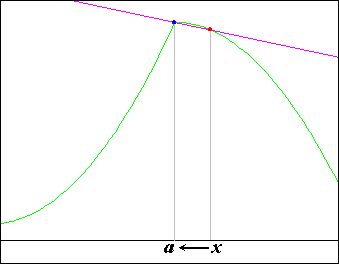
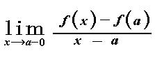
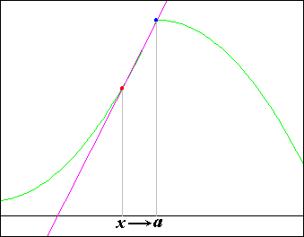

One-sided derivative
Introduction
Right-hand derivative

Left-hand derivative


This function f(x) is not differentiable at x = a .
Because right-hand derivative is not left-hand derivative.
Applet
Drag the red point.